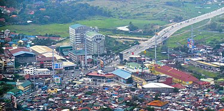

Bacoor (IPA: [bakoʔˈoɾ]), officially the City of Bacoor (Filipino: Lungsod ng Bacoor), is a 1st class component city in the province of Cavite, Philippines. According to the 2020 census, it has a population of 664,625 people, making it the 15th most populous city in the Philippines[3] and the second largest city in the province of Cavite after Dasmariñas.
The name of Bacoor is transcribed in old sources variously as "Bacoor", "Bacor", "Bakur", etc. It was originally the name of the Bacoor Bay which separates the Cavite peninsula from the mainland. The name is believed to be originally from the Philippine Negrito languages, meaning "circle", referring to the shape of the bay.[5] Another possible origin of the name of Bacoor is from Tagalog for "highlands" or "plateau" (cf. Bacolor and Bacolod).[6]
Bacoor was one of the flashpoints of the Cavite Mutiny of 1872. Bacoor's parish priest at that time, Fr. Mariano Gómez, was one of the GOMBURZA trio implicated in the mutiny for advocating the secularization of priesthood in the Philippines. He and the rest of GOMBURZA were executed at Bagumbayan in 1872.[7][8] The death of the GOMBURZA served as the inspiration for Jose Rizal's El Filibusterismo, which in turn influenced the ignition of the Philippine Revolution.
During the Philippine Revolution against Spain in 1896, Bacoor was one of the first towns in Cavite to rise up. A Katipunan chapter, codenamed Gargano, led by Gil Ignacio from barrio Banalo, started the hostilities in Bacoor on September 2, 1896, three days after the revolution began.[9] On February 17, 1897, General Emilio Aguinaldo's 40,000-strong force confronted a 20,000-strong Spanish reinforcement at the Zapote River. The Katipuneros reinforced the southern bank of the river with trenches designed by Filipino engineer Edilberto Evangelista.
Edilberto Evangelista was known as the "Engineer of the revolution" and the "Hero of the revolution". They also blew up the Zapote Bridge with explosives which killed several Spaniards crossing it and thereby preventing them from reaching Cavite and forcing them to retreat to Muntinlupa. Despite the Filipino victory, they lost the brilliant Evangelista who was killed in action.[9][10] However, after the Spanish counteroffensive in May 1897, Bacoor and the rest of Cavite finally fell to the Spaniards, forcing Aguinaldo and his men to retreat to Biak-na-Bato.[9]
During World War II, in 1942, Japanese occupation forces entered Bacoor and other towns of Cavite province. From May 7, 1942, to August 15, 1945, many Caviteños joined the Cavite Guerrilla Unit (CGU), a recognized guerrilla group headed by Colonel Mariano Castañeda.
This group would eventually become the Filipino-American Cavite Guerrilla Forces (FACGF). Colonel Francisco Guerrero and the FACGF's 2nd Infantry Regiment was put in charge of Japanese resistance in Bacoor.
The FAGCF, together with Filipino soldiers under the 4th, and 42nd Infantry Division of the Philippine Commonwealth Army liberated and recaptured Bacoor and 4th Constabulary Regiment of the Philippine Constabulary was defeated the Japanese Imperial Army forces from January 1, to August 15, 1945, during the Allied liberation of the Philippines.[15]
On June 21, 1988, Mayor Angelito Miranda was assassinated in front of a hospital in Las Piñas by two gunmen, which the police claimed to be from a notorious drug syndicate.[16]